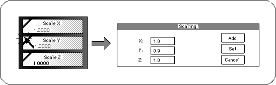
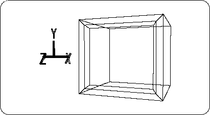
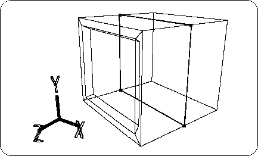
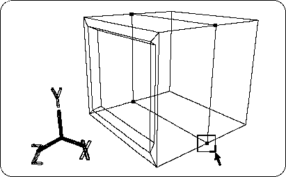
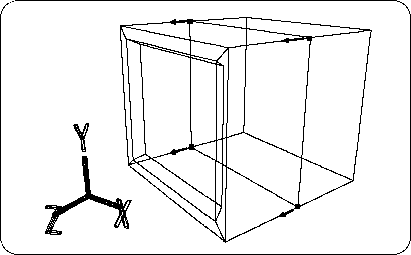

Return to previous page | Return to menu | Go to next page
Clicking on the triangle in the [Scale] diagram will display a dialog box for entering a numerical value for the enlargement ratio (Figure 2-21). If you enter 0.9 in the Y field and click “Set”, the Y direction can be reduced to 90%.

The result is shown in the figure (Figure 2-22).

Next, add four edges to surround the TV monitor by dividing the midpoint of the edge and creating the edge (Figure 2-23).

Select the newly created four midpoints by dragging them with the “T” key and the left mouse button (Figure 2-24).

Switch the operation mode from “OBJ” to “TAG”,
Click [TransZ] to move the selected TAG in the + Z direction (Figure 2-25).

Next, check the coordinates of the moved TAG.